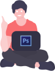
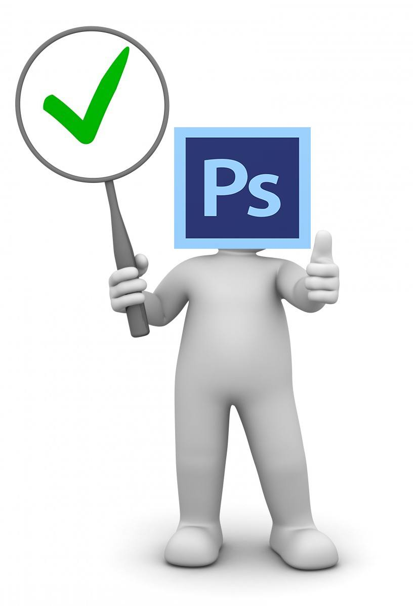
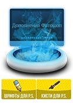

Adobe Photoshop — считается наилучшим многофункциональным графическим редактором, и каждая новая версия радует безграничными возможностями, уймой настроек, эффектов, фильтров и огромным инструментарием. Программа лидирует в сфере средств редактирования растровых изображений, и является самым узнаваемым и популярным продуктом.

Adobe Photoshop — Мощный графический редактор |
|
|
Если вы решили скачать бесплатно этот фоторедактор то наверняка вы знаете для чего он предназначен. Его безумную популярность подчёркивает уже тот факт, что практически всем конкурентам Photoshop, как, например, Macromedia Fireworks, Corel Photo-Paint, GIMP, WinImages, пришлось добавить в своих продуктах поддержку формата – PSD.
|
|
Многофункциональный Adobe Photoshop
У нас вы сможете Фотошоп скачать и пользоваться безвозмездно, если вы не знали то Photoshop программа применяется для работы с растровой графикой, однако также имеется многофункциональный набор, поддерживающий векторную графику. Многие обожают программу именно за возможность качественного ретуширования фотографий. Приложение способно иметь дело практически с любым известным на сегодняшний день форматом графики, что позволяет без проблем осуществлять конвертацию изображений без каких-либо сторонних программ.

Фотошоп дает возможность работать как с 2D так и с 3D изображениями, доступность данных свойств ставит на порядок выше себя в глазах своих аналогов. Помимо стандартных функций сама программа совершенствуется и появляются новые хоть и незначительные функции но они сделаны ради удобства работы в программе. Например в последнем релизе усовершенствовали саму работу и запуск программы теперь можно хранить свои проекты в бесплатном облачном хранилище от Adobe.
Скачать Фотошоп на русском — лучшие версии:
Adobe Photoshop CS6 (x32 — x64)
Adobe Photoshop CS5 (x32 — x64)
Adobe Photoshop CC 2017 (x32 — x64)
Освоение Adobe Photoshop по истине не легкая задача, но благо что доступность уроков совсем бесплатна. В них входят в большей степени видео уроки так как это быстрее и менее запутанней чем читать очень большой текст и в то же время выполнять действия в программе. В начале освоения Photoshop бесплатных уроков будет достаточно чтоб начать пользоваться на среднем уровне, но если подходить серьезно то свои навыки можно применить за умеренную плату, что даст возможность приобрести платные уроки и стать профессионалом.
Свежие версии Фотошопа:
Только Для Windows 10 (x64)
Для Windows 7/10 (x64)
Для Windows 7/10 (x64 — x32)
Усовершенствованная программа Adobe Photoshop – это реальная возможность работы с разнообразными изображениями в цифровом формате. Считаясь лучшим редактором, она сочетает в себе идеальные инструменты для обработки, обрезки, ретуширования и раскрашивания фотографий. Кстати, если скачать Фотошоп бесплатно то он способен эффективно взаимодействовать с остальными приложениями компании Adobe для обработки мультимедийных данных. К примеру, с Adobe Premiere, Illustrator либо Encore DVD.
Инструкции по активации Adobe Photoshop
|  | |
Программный продукт Адобе заслуженно считается эталоном качества среди всех существующих фоторедакторов пиксельной графики. Самодостаточным же в руках новичка назвать его нельзя. Иногда, для успешного редактирования, создания коллажа или просто авторского рисунка, неопытному пользователю, жизненно необходимо устанавливать дополнения.
Прочее для Photoshop:
Прочие дополнения, которые не идут, в базовой комплектации фоторедактора, но которые он может применять в своей работе.
К таковым относятся: Шрифты(ttf; fnt; otf), Экшены (atn), Фигуры (csh), Стили (asi), Градиенты (grd), Текстуры (pat), Кисти (abr).
|  | Первые шаги — инструкция новичка | |
| Кисти для Фотошопа тату и узоры | ||
| Качественные красивые шрифты бесплатно | ||
| Серийный номер cs6 |
Кроме шрифтов все эти дополнения интегрируются в фоторедактор при помощи заранее предусмотренных разработчиками программы функций. Шрифты же следует добавлять в саму Os, именно оттуда их использует в своей работе Adobe редактор. Да, следует заметить, что только стили написания этих буковок и циферок нельзя изготовить при помощи самого Фотошопа самостоятельно. Все же остальные, перечисленные выше приложения, при известных, профессиональных навыках работы с редактором можно создать самостоятельно. Правда, это только если вы и вправду профессионал. Новичкам же это в меру их слабых познаний недоступно. А ведь подобные файлы позволяют экономить «вагон» времени и «тучу» сил, делают увлекательный мир Фотошопа ещё более интересным.